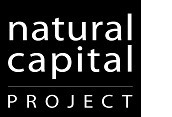

The Concierge Team
NatCap Marine Planning Use-Cases
The Natural Capital Project (NatCap) aims to integrate the values of nature into all major decisions affecting the environment and human well-being. NatCap has developed practical, science-based approaches and tools that quantify, map, and value services provided by nature. While NatCap has some experience with marine planning, we do not know, nor do, everything. Therefore, we have compiled helpful information from others in the marine planning community and added our experience to the mix.
Acknowledgements
Numerous colleagues from the Natural Capital Project contributed to this website. We would like to thank...
Anne Guerry, Spencer Wood, Katie Arkema, Greg Guannel, Rob Griffin, Amy Rosenthal,
Jodie Toft, Lauren Rogers, Joey Bernhardt, CK Kim, Joe Faries, Yi Xi, Doug Denu,
Mike Papenfus, Jeremy Davies, Matt Marsik, Susan Langridge, and Mary Ruckelshaus
We also thank our partners, without whom this work would not have been possible...
World Wildlife Fund (WWF), The Nature Conservancy (TNC), West Coast Aquatics,
Belize Coastal Zone Management Authority and Institute (CZMAI),
Northeast Regional Ocean Council (NROC), Center for Ocean Solutions (COS),
Downstream Strategies, Barbados Coastal Zone Management Unit (CZMU),
Inter-American Development Bank (IDB), Healthy Reefs Initiative,
National Oceanic and Atmospheric Administration (NOAA), and many others.
Beta testing and design input were provided by...
Amélie Augé, Jorge Ramirez, Britta Heine, Jan Kleine Büning,
Brazilian Future Ocean Panel (PainelMar), Mike Barrett,
Libby Whiting, Leo Dutra, Adam Kowalski, Holger Janssen,
Anne Walton, Sushmita Majumdar, and Hedley Grantham
This website was developed with support from the Gordon and Betty Moore Foundation.
top